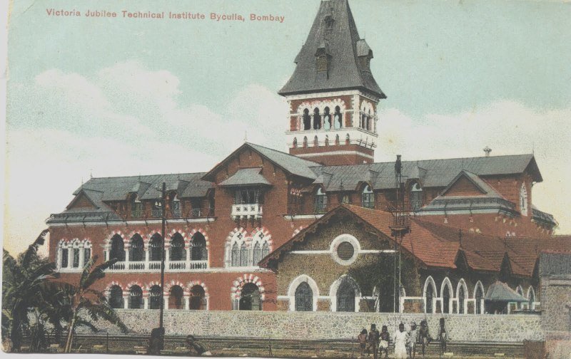
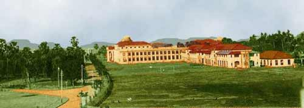
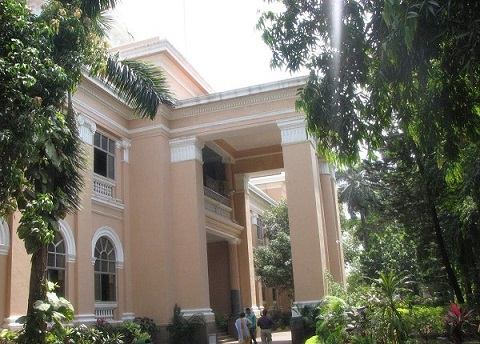

History
Established in 1887 (VJTI Memorandum of Association), VJTI started with two departments, namely the Sir J. J. School of Mechanical Engineering and the Ripon Textile School for the two branches of industry to meet the technical manpower requirements of Bombay and arou
The first step in the expansion of the Institute was taken in 1903 when courses in Electrical Engineering were introduced. The Technical & Applied Chemistry Department was added in 1906, followed by the Department of Sanitary Engineering in 1913. By G. R. No. 1850 of 27th June 1913, the institute was recognized as the Central Technological Institute of Bombay Province. In the early days, the Institute was housed in Byculla in a building donated for the purpose by Sir Dinshaw Maneckji Petit.

VJTI Campus at Byculla, Bombay (1887-1922) – Now Central Railway Hospital
Soon after the First World War in 1923, the Institute moved to its present campus at Matunga. Besides Sir Petit, contribution of the liberal grants came from the Government and the Bombay Mill Owners’ Association. A new block of northern light roof type construction was added in 1931 for housing the textile machinery and equipment which was obtained through the kind offices of Sir Ness Wadia.

A retouched image of the VJTI Matunga campus in 1923
The Bachelor Degree courses in Textile, Mechanical Engineering and Electrical Engineering were started In 1946,1947 and 1949 respectively. Victoria Jubilee Technical Institute has played a very vital role in setting up IITs during 1955-60. Prof. Kelkar, founder director of IIT Kanpur and planning officer of IIT Bombay was VJTI Electrical Engineering faculty. Prof SenGupto, founder director of IIT Madras was Principal of VJTI.
The Institute has been affiliated to the University of Bombay and was one of the fourteen institutes selected by the Central Government for further development with grant-in-aid from Govt. of India. Prior to 1960 Victoria Jubilee Technical Institute was the only Institute offering Engineering degree and Post Graduate courses under the University of Bombay and enjoyed de facto autonomy.
In 1997, the Institute was renamed from its old name Victoria Jubilee Technical Institute to its present name Veermata Jijabai Technological Institute.

Current VJTI Campus at Matunga (East), Mumbai 400019
Copyright © 2024 VJTI Mumbai. All rights reserved